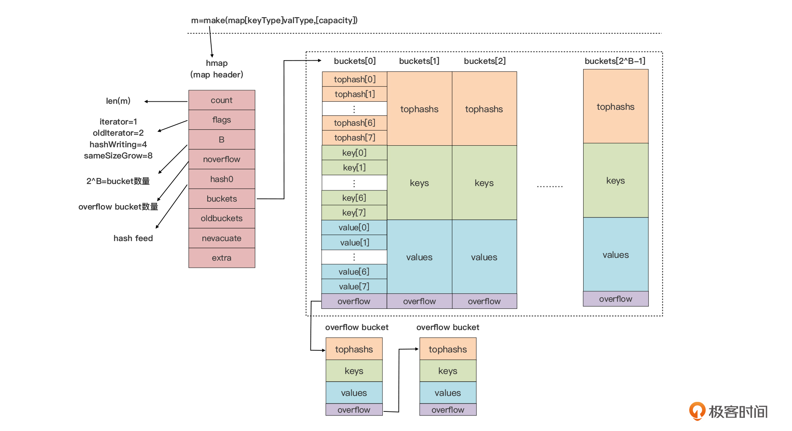
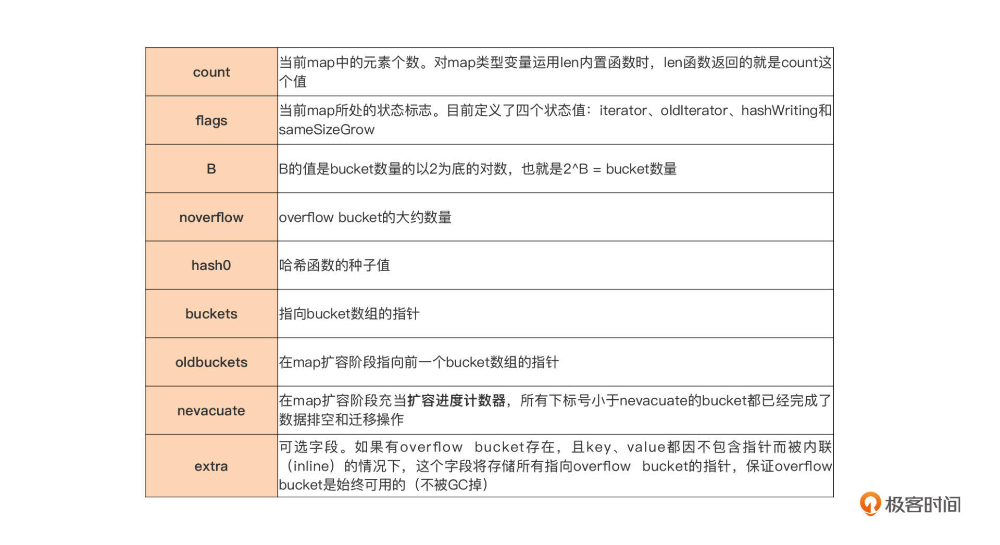
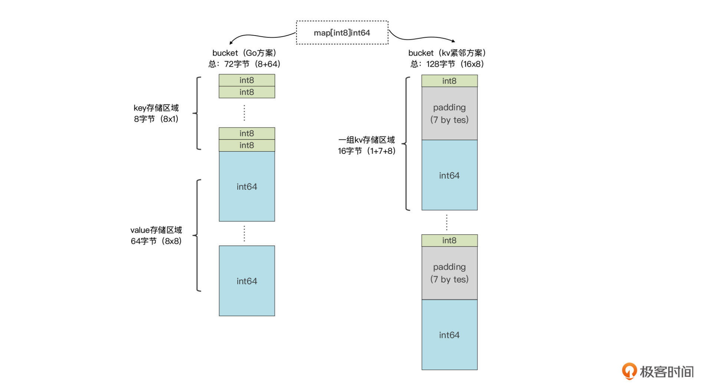
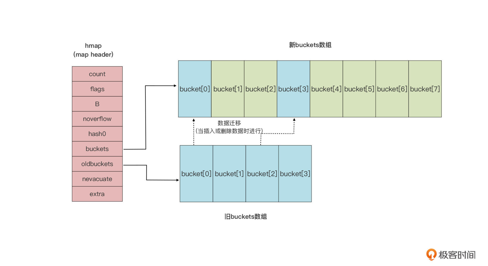

- 00 开篇词 这样入门Go，才能少走弯路.md.html
- 01 前世今生：你不得不了解的Go的历史和现状.md.html
- 02 拒绝“Hello and Bye”：Go语言的设计哲学是怎么一回事？.md.html
- 03 配好环境：选择一种最适合你的Go安装方法.md.html
- 04 初窥门径：一个Go程序的结构是怎样的？.md.html
- 05 标准先行：Go项目的布局标准是什么？.md.html
- 06 构建模式：Go是怎么解决包依赖管理问题的？.md.html
- 07 构建模式：Go Module的6类常规操作.md.html
- 08 入口函数与包初始化：搞清Go程序的执行次序.md.html
- 09 即学即练：构建一个Web服务就是这么简单.md.html
- 10 变量声明：静态语言有别于动态语言的重要特征.md.html
- 11 代码块与作用域：如何保证变量不会被遮蔽？.md.html
- 12 基本数据类型：Go原生支持的数值类型有哪些？.md.html
- 13 基本数据类型：为什么Go要原生支持字符串类型？.md.html
- 14 常量：Go在“常量”设计上的创新有哪些？.md.html
- 15 同构复合类型：从定长数组到变长切片.md.html
- 16 复合数据类型：原生map类型的实现机制是怎样的？.md.html
- 17 复合数据类型：用结构体建立对真实世界的抽象.md.html
- 18 控制结构：if的“快乐路径”原则.md.html
- 19 控制结构：Go的for循环，仅此一种.md.html
- 20 控制结构：Go中的switch语句有哪些变化？.md.html
- 21 函数：请叫我“一等公民”.md.html
- 22 函数：怎么结合多返回值进行错误处理？.md.html
- 23 函数：怎么让函数更简洁健壮？.md.html
- 24 方法：理解“方法”的本质.md.html
- 25 方法：方法集合与如何选择receiver类型？.md.html
- 26 方法：如何用类型嵌入模拟实现“继承”？.md.html
- 27 即学即练：跟踪函数调用链，理解代码更直观.md.html
- 28 接口：接口即契约.md.html
- 29 接口：为什么nil接口不等于nil？.md.html
- 30 接口：Go中最强大的魔法.md.html
- 31 并发：Go的并发方案实现方案是怎样的？.md.html
- 32 并发：聊聊Goroutine调度器的原理.md.html
- 33 并发：小channel中蕴含大智慧.md.html
- 34 并发：如何使用共享变量？.md.html
- 35 即学即练：如何实现一个轻量级线程池？.md.html
- 36 打稳根基：怎么实现一个TCP服务器？（上）.md.html
- 37 代码操练：怎么实现一个TCP服务器？（中）.md.html
- 38 成果优化：怎么实现一个TCP服务器？（下）.md.html
- 39 驯服泛型：了解类型参数.md.html
- 40 驯服泛型：定义泛型约束.md.html
- 41 驯服泛型：明确使用时机.md.html
- 元旦快乐 这是一份暂时停更的声明.md.html
- 加餐 作为Go Module的作者，你应该知道的几件事.md.html
- 加餐 如何拉取私有的Go Module？.md.html
- 加餐 我“私藏”的那些优质且权威的Go语言学习资料.md.html
- 加餐 聊聊Go 1.17版本的那些新特性.md.html
- 加餐 聊聊Go语言的指针.md.html
- 加餐 聊聊最近大热的Go泛型.md.html
- 大咖助阵 叶剑峰：Go语言中常用的那些代码优化点.md.html
- 大咖助阵 大明：Go泛型，泛了，但没有完全泛.md.html
- 大咖助阵 孔令飞：从小白到“老鸟”，我的Go语言进阶之路.md.html
- 大咖助阵 徐祥曦：从销售到分布式存储工程师，我与 Go 的故事.md.html
- 大咖助阵 曹春晖：聊聊 Go 语言的 GC 实现.md.html
- 大咖助阵 海纳：聊聊语言中的类型系统与泛型.md.html
- 期中测试 一起检验下你的学习成果吧.md.html
- 用户故事 罗杰：我的Go语言学习之路.md.html
- 结束语 和你一起迎接Go的黄金十年.md.html
- 结课测试 快来检验下你的学习成果吧！.md.html
- 捐赠
16 复合数据类型：原生map类型的实现机制是怎样的？
你好，我是Tony Bai。
上一节课，我们学习了Go语言中最常用的两个复合类型：数组与切片。它们代表一组连续存储的同构类型元素集合。不同的是，数组的长度是确定的，而切片，我们可以理解为一种“动态数组”，它的长度在运行时是可变的。
这一节课，我们会继续前面的脉络，学习另外一种日常Go编码中比较常用的复合类型，这种类型可以让你将一个值（Value）唯一关联到一个特定的键（Key）上，可以用于实现特定键值的快速查找与更新，这个复合数据类型就是map。很多中文Go编程语言类技术书籍都会将它翻译为映射、哈希表或字典，但在我的课程中，为了保持原汁原味，我就直接使用它的英文名，map。
map是我们既切片之后，学到的第二个由Go编译器与运行时联合实现的复合数据类型，它有着复杂的内部实现，但却提供了十分简单友好的开发者使用接口。这一节课，我将从map类型的定义，到它的使用，再到map内部实现机制，由浅到深地让你吃透map类型。
什么是map类型？
map是Go语言提供的一种抽象数据类型，它表示一组无序的键值对。在后面的讲解中，我们会直接使用key和value分别代表map的键和值。而且，map集合中每个key都是唯一的：

和切片类似，作为复合类型的map，它在Go中的类型表示也是由key类型与value类型组成的，就像下面代码：
map[key_type]value_type
key与value的类型可以相同，也可以不同：
map[string]string // key与value元素的类型相同
map[int]string // key与value元素的类型不同
如果两个map类型的key元素类型相同，value元素类型也相同，那么我们可以说它们是同一个map类型，否则就是不同的map类型。
这里，我们要注意，map类型对value的类型没有限制，但是对key的类型却有严格要求，因为map类型要保证key的唯一性。Go语言中要求，key的类型必须支持“==”和“!=”两种比较操作符。
但是，在Go语言中，函数类型、map类型自身，以及切片只支持与nil的比较，而不支持同类型两个变量的比较。如果像下面代码这样，进行这些类型的比较，Go编译器将会报错：
s1 := make([]int, 1)
s2 := make([]int, 2)
f1 := func() {}
f2 := func() {}
m1 := make(map[int]string)
m2 := make(map[int]string)
println(s1 == s2) // 错误：invalid operation: s1 == s2 (slice can only be compared to nil)
println(f1 == f2) // 错误：invalid operation: f1 == f2 (func can only be compared to nil)
println(m1 == m2) // 错误：invalid operation: m1 == m2 (map can only be compared to nil)
因此在这里，你一定要注意：函数类型、map类型自身，以及切片类型是不能作为map的key类型的。
知道如何表示一个map类型后，接下来，我们来看看如何声明和初始化一个map类型的变量。
map变量的声明和初始化
我们可以这样声明一个map变量：
var m map[string]int // 一个map[string]int类型的变量
和切片类型变量一样，如果我们没有显式地赋予map变量初值，map类型变量的默认值为nil。
不过切片变量和map变量在这里也有些不同。初值为零值nil的切片类型变量，可以借助内置的append的函数进行操作，这种在Go语言中被称为“零值可用”。定义“零值可用”的类型，可以提升我们开发者的使用体验，我们不用再担心变量的初始状态是否有效。
但map类型，因为它内部实现的复杂性，无法“零值可用”。所以，如果我们对处于零值状态的map变量直接进行操作，就会导致运行时异常（panic），从而导致程序进程异常退出：
var m map[string]int // m = nil
m["key"] = 1 // 发生运行时异常：panic: assignment to entry in nil map
所以，我们必须对map类型变量进行显式初始化后才能使用。那我们怎样对map类型变量进行初始化呢？
和切片一样，为map类型变量显式赋值有两种方式：一种是使用复合字面值；另外一种是使用make这个预声明的内置函数。
方法一：使用复合字面值初始化map类型变量。
我们先来看这句代码：
m := map[int]string{}
这里，我们显式初始化了map类型变量m。不过，你要注意，虽然此时map类型变量m中没有任何键值对，但变量m也不等同于初值为nil的map变量。这个时候，我们对m进行键值对的插入操作，不会引发运行时异常。
这里我们再看看怎么通过稍微复杂一些的复合字面值，对map类型变量进行初始化：
m1 := map[int][]string{
1: []string{"val1_1", "val1_2"},
3: []string{"val3_1", "val3_2", "val3_3"},
7: []string{"val7_1"},
}
type Position struct {
x float64
y float64
}
m2 := map[Position]string{
Position{29.935523, 52.568915}: "school",
Position{25.352594, 113.304361}: "shopping-mall",
Position{73.224455, 111.804306}: "hospital",
}
我们看到，上面代码虽然完成了对两个map类型变量m1和m2的显式初始化，但不知道你有没有发现一个问题，作为初值的字面值似乎有些“臃肿”。你看，作为初值的字面值采用了复合类型的元素类型，而且在编写字面值时还带上了各自的元素类型，比如作为map[int] []string值类型的[]string，以及作为map[Position]string的key类型的Position。
别急！针对这种情况，Go提供了“语法糖”。这种情况下，Go允许省略字面值中的元素类型。因为map类型表示中包含了key和value的元素类型，Go编译器已经有足够的信息，来推导出字面值中各个值的类型了。我们以m2为例，这里的显式初始化代码和上面变量m2的初始化代码是等价的：
m2 := map[Position]string{
{29.935523, 52.568915}: "school",
{25.352594, 113.304361}: "shopping-mall",
{73.224455, 111.804306}: "hospital",
}
以后在无特殊说明的情况下，我们都将使用这种简化后的字面值初始化方式。
方法二：使用make为map类型变量进行显式初始化。
和切片通过make进行初始化一样，通过make的初始化方式，我们可以为map类型变量指定键值对的初始容量，但无法进行具体的键值对赋值，就像下面代码这样：
m1 := make(map[int]string) // 未指定初始容量
m2 := make(map[int]string, 8) // 指定初始容量为8
不过，map类型的容量不会受限于它的初始容量值，当其中的键值对数量超过初始容量后，Go运行时会自动增加map类型的容量，保证后续键值对的正常插入。
了解完map类型变量的声明与初始化后，我们就来看看，在日常开发中，map类型都有哪些基本操作和注意事项。
map的基本操作
针对一个map类型变量，我们可以进行诸如插入新键值对、获取当前键值对数量、查找特定键和读取对应值、删除键值对，以及遍历键值等操作。我们一个个来学习。
操作一：插入新键值对。
面对一个非nil的map类型变量，我们可以在其中插入符合map类型定义的任意新键值对。插入新键值对的方式很简单，我们只需要把value赋值给map中对应的key就可以了：
m := make(map[int]string)
m[1] = "value1"
m[2] = "value2"
m[3] = "value3"
而且，我们不需要自己判断数据有没有插入成功，因为Go会保证插入总是成功的。这里，Go运行时会负责map变量内部的内存管理，因此除非是系统内存耗尽，我们可以不用担心向map中插入新数据的数量和执行结果。
不过，如果我们插入新键值对的时候，某个key已经存在于map中了，那我们的插入操作就会用新值覆盖旧值：
m := map[string]int {
"key1" : 1,
"key2" : 2,
}
m["key1"] = 11 // 11会覆盖掉"key1"对应的旧值1
m["key3"] = 3 // 此时m为map[key1:11 key2:2 key3:3]
从这段代码中你可以看到，map类型变量m在声明的同时就做了初始化，它的内部建立了两个键值对，其中就包含键key1。所以后面我们再给键key1进行赋值时，Go不会重新创建key1键，而是会用新值(11)把key1键对应的旧值(1)替换掉。
操作二：获取键值对数量。
如果我们在编码中，想知道当前map类型变量中已经建立了多少个键值对，那我们可以怎么做呢？和切片一样，map类型也可以通过内置函数len，获取当前变量已经存储的键值对数量：
m := map[string]int {
"key1" : 1,
"key2" : 2,
}
fmt.Println(len(m)) // 2
m["key3"] = 3
fmt.Println(len(m)) // 3
不过，这里要注意的是我们不能对map类型变量调用cap，来获取当前容量，这是map类型与切片类型的一个不同点。
操作三：查找和数据读取
和写入相比，map类型更多用在查找和数据读取场合。所谓查找，就是判断某个key是否存在于某个map中。有了前面向map插入键值对的基础，我们可能自然而然地想到，可以用下面代码去查找一个键并获得该键对应的值：
m := make(map[string]int)
v := m["key1"]
乍一看，第二行代码在语法上好像并没有什么不当之处，但其实通过这行语句，我们还是无法确定键key1是否真实存在于map中。这是因为，当我们尝试去获取一个键对应的值的时候，如果这个键在map中并不存在，我们也会得到一个值，这个值是value元素类型的零值。
我们以上面这个代码为例，如果键key1在map中并不存在，那么v的值就会被赋予value元素类型int的零值，也就是0。所以我们无法通过v值判断出，究竟是因为key1不存在返回的零值，还是因为key1本身对应的value就是0。
那么在map中查找key的正确姿势是什么呢？Go语言的map类型支持通过用一种名为“comma ok”的惯用法，进行对某个key的查询。接下来我们就用“comma ok”惯用法改造一下上面的代码：
m := make(map[string]int)
v, ok := m["key1"]
if !ok {
// "key1"不在map中
}
// "key1"在map中，v将被赋予"key1"键对应的value
我们看到，这里我们通过了一个布尔类型变量ok，来判断键“key1”是否存在于map中。如果存在，变量v就会被正确地赋值为键“key1”对应的value。
不过，如果我们并不关心某个键对应的value，而只关心某个键是否在于map中，我们可以使用空标识符替代变量v，忽略可能返回的value：
m := make(map[string]int)
_, ok := m["key1"]
... ...
因此，你一定要记住：在Go语言中，请使用“comma ok”惯用法对map进行键查找和键值读取操作。
操作四：删除数据。
接下来，我们再看看看如何从map中删除某个键值对。在Go中，我们需要借助内置函数delete来从map中删除数据。使用delete函数的情况下，传入的第一个参数是我们的map类型变量，第二个参数就是我们想要删除的键。我们可以看看这个代码示例：
m := map[string]int {
"key1" : 1,
"key2" : 2,
}
fmt.Println(m) // map[key1:1 key2:2]
delete(m, "key2") // 删除"key2"
fmt.Println(m) // map[key1:1]
这里要注意的是，delete函数是从map中删除键的唯一方法。即便传给delete的键在map中并不存在，delete函数的执行也不会失败，更不会抛出运行时的异常。
操作五：遍历map中的键值数据
最后，我们来说一下如何遍历map中的键值数据。这一点虽然不像查询和读取操作那么常见，但日常开发中我们还是有这个需求的。在Go中，遍历map的键值对只有一种方法，那就是像对待切片那样通过for range语句对map数据进行遍历。我们看一个例子：
package main
import "fmt"
func main() {
m := map[int]int{
1: 11,
2: 12,
3: 13,
}
fmt.Printf("{ ")
for k, v := range m {
fmt.Printf("[%d, %d] ", k, v)
}
fmt.Printf("}\n")
}
你看，通过for range遍历map变量m，每次迭代都会返回一个键值对，其中键存在于变量k中，它对应的值存储在变量v中。我们可以运行一下这段代码，可以得到符合我们预期的结果：
{ [1, 11] [2, 12] [3, 13] }
如果我们只关心每次迭代的键，我们可以使用下面的方式对map进行遍历：
for k, _ := range m {
// 使用k
}
当然更地道的方式是这样的：
for k := range m {
// 使用k
}
如果我们只关心每次迭代返回的键所对应的value，我们同样可以通过空标识符替代变量k，就像下面这样：
for _, v := range m {
// 使用v
}
不过，前面map遍历的输出结果都非常理想，给我们的表象好像是迭代器按照map中元素的插入次序逐一遍历。那事实是不是这样呢？我们再来试试，多遍历几次这个map看看。
我们先来改造一下代码：
package main
import "fmt"
func doIteration(m map[int]int) {
fmt.Printf("{ ")
for k, v := range m {
fmt.Printf("[%d, %d] ", k, v)
}
fmt.Printf("}\n")
}
func main() {
m := map[int]int{
1: 11,
2: 12,
3: 13,
}
for i := 0; i < 3; i++ {
doIteration(m)
}
}
运行一下上述代码，我们可以得到这样结果：
{ [3, 13] [1, 11] [2, 12] }
{ [1, 11] [2, 12] [3, 13] }
{ [3, 13] [1, 11] [2, 12] }
我们可以看到，对同一map做多次遍历的时候，每次遍历元素的次序都不相同。这是Go语言map类型的一个重要特点，也是很容易让Go初学者掉入坑中的一个地方。所以这里你一定要记住：程序逻辑千万不要依赖遍历map所得到的的元素次序。
从我们前面的讲解，你应该也感受到了，map类型非常好用，那么，我们在各个函数方法间传递map变量会不会有很大开销呢？
map变量的传递开销
其实你不用担心开销的问题。
和切片类型一样，map也是引用类型。这就意味着map类型变量作为参数被传递给函数或方法的时候，实质上传递的只是一个“描述符”（后面我们再讲这个描述符究竟是什么)，而不是整个map的数据拷贝，所以这个传递的开销是固定的，而且也很小。
并且，当map变量被传递到函数或方法内部后，我们在函数内部对map类型参数的修改在函数外部也是可见的。比如你从这个示例中就可以看到，函数foo中对map类型变量m进行了修改，而这些修改在foo函数外也可见。
package main
import "fmt"
func foo(m map[string]int) {
m["key1"] = 11
m["key2"] = 12
}
func main() {
m := map[string]int{
"key1": 1,
"key2": 2,
}
fmt.Println(m) // map[key1:1 key2:2]
foo(m)
fmt.Println(m) // map[key1:11 key2:12]
}
map的内部实现
和切片相比，map类型的内部实现要更加复杂。Go运行时使用一张哈希表来实现抽象的map类型。运行时实现了map类型操作的所有功能，包括查找、插入、删除等。在编译阶段，Go编译器会将Go语法层面的map操作，重写成运行时对应的函数调用。大致的对应关系是这样的：
// 创建map类型变量实例
m := make(map[keyType]valType, capacityhint) → m := runtime.makemap(maptype, capacityhint, m)
// 插入新键值对或给键重新赋值
m["key"] = "value" → v := runtime.mapassign(maptype, m, "key") v是用于后续存储value的空间的地址
// 获取某键的值
v := m["key"] → v := runtime.mapaccess1(maptype, m, "key")
v, ok := m["key"] → v, ok := runtime.mapaccess2(maptype, m, "key")
// 删除某键
delete(m, "key") → runtime.mapdelete(maptype, m, “key”)
这是map类型在Go运行时层实现的示意图：

我们可以看到，和切片的运行时表示图相比，map的实现示意图显然要复杂得多。接下来，我们结合这张图来简要描述一下map在运行时层的实现原理。我们重点讲解一下一个map变量在初始状态、进行键值对操作后，以及在并发场景下的Go运行时层的实现原理。
初始状态
从图中我们可以看到，与语法层面 map 类型变量（m）一一对应的是*runtime.hmap 的实例，即runtime.hmap类型的指针，也就是我们前面在讲解 map 类型变量传递开销时提到的 map 类型的描述符。hmap 类型是 map 类型的头部结构（header），它存储了后续 map 类型操作所需的所有信息，包括：

真正用来存储键值对数据的是桶，也就是bucket，每个bucket中存储的是Hash值低bit位数值相同的元素，默认的元素个数为 BUCKETSIZE（值为 8，Go 1.17版本中在$GOROOT/src/cmd/compile/internal/reflectdata/reflect.go中定义，与 runtime/map.go 中常量 bucketCnt 保持一致）。
当某个bucket（比如buckets[0])的8个空槽slot）都填满了，且map尚未达到扩容的条件的情况下，运行时会建立overflow bucket，并将这个overflow bucket挂在上面bucket（如buckets[0]）末尾的overflow指针上，这样两个buckets形成了一个链表结构，直到下一次map扩容之前，这个结构都会一直存在。
从图中我们可以看到，每个bucket由三部分组成，从上到下分别是tophash区域、key存储区域和value存储区域。
- tophash区域
当我们向map插入一条数据，或者是从map按key查询数据的时候，运行时都会使用哈希函数对key做哈希运算，并获得一个哈希值（hashcode）。这个hashcode非常关键，运行时会把hashcode“一分为二”来看待，其中低位区的值用于选定bucket，高位区的值用于在某个bucket中确定key的位置。我把这一过程整理成了下面这张示意图，你理解起来可以更直观：

因此，每个bucket的tophash区域其实是用来快速定位key位置的，这样就避免了逐个key进行比较这种代价较大的操作。尤其是当key是size较大的字符串类型时，好处就更突出了。这是一种以空间换时间的思路。
- key存储区域
接着，我们看tophash区域下面是一块连续的内存区域，存储的是这个bucket承载的所有key数据。运行时在分配bucket的时候需要知道key的Size。那么运行时是如何知道key的size的呢？
当我们声明一个map类型变量，比如var m map[string]int时，Go运行时就会为这个变量对应的特定map类型，生成一个runtime.maptype实例。如果这个实例已经存在，就会直接复用。maptype实例的结构是这样的：
type maptype struct {
typ _type
key *_type
elem *_type
bucket *_type // internal type representing a hash bucket
keysize uint8 // size of key slot
elemsize uint8 // size of elem slot
bucketsize uint16 // size of bucket
flags uint32
}
我们可以看到，这个实例包含了我们需要的map类型中的所有”元信息”。我们前面提到过，编译器会把语法层面的map操作重写成运行时对应的函数调用，这些运行时函数都有一个共同的特点，那就是第一个参数都是maptype指针类型的参数。
Go运行时就是利用maptype参数中的信息确定key的类型和大小的。map所用的hash函数也存放在maptype.key.alg.hash(key, hmap.hash0)中。同时maptype的存在也让Go中所有map类型都共享一套运行时map操作函数，而不是像C++那样为每种map类型创建一套map操作函数，这样就节省了对最终二进制文件空间的占用。
- value存储区域
我们再接着看key存储区域下方的另外一块连续的内存区域，这个区域存储的是key对应的value。和key一样，这个区域的创建也是得到了maptype中信息的帮助。Go运行时采用了把key和value分开存储的方式，而不是采用一个kv接着一个kv的kv紧邻方式存储，这带来的其实是算法上的复杂性，但却减少了因内存对齐带来的内存浪费。
我们以map[int8]int64为例，看看下面的存储空间利用率对比图：

你会看到，当前Go运行时使用的方案内存利用效率很高，而kv紧邻存储的方案在map[int8]int64这样的例子中内存浪费十分严重，它的内存利用率是72/128=56.25%，有近一半的空间都浪费掉了。
另外，还有一点我要跟你强调一下，如果key或value的数据长度大于一定数值，那么运行时不会在bucket中直接存储数据，而是会存储key或value数据的指针。目前Go运行时定义的最大key和value的长度是这样的：
// $GOROOT/src/runtime/map.go
const (
maxKeySize = 128
maxElemSize = 128
)
map扩容
我们前面提到过，map会对底层使用的内存进行自动管理。因此，在使用过程中，当插入元素个数超出一定数值后，map一定会存在自动扩容的问题，也就是怎么扩充bucket的数量，并重新在bucket间均衡分配数据的问题。
那么map在什么情况下会进行扩容呢？Go运行时的map实现中引入了一个LoadFactor（负载因子），当count > LoadFactor * 2^B或overflow bucket过多时，运行时会自动对map进行扩容。目前Go最新1.17版本LoadFactor设置为6.5（loadFactorNum/loadFactorDen）。这里是Go中与map扩容相关的部分源码：
// $GOROOT/src/runtime/map.go
const (
... ...
loadFactorNum = 13
loadFactorDen = 2
... ...
)
func mapassign(t *maptype, h *hmap, key unsafe.Pointer) unsafe.Pointer {
... ...
if !h.growing() && (overLoadFactor(h.count+1, h.B) || tooManyOverflowBuckets(h.noverflow, h.B)) {
hashGrow(t, h)
goto again // Growing the table invalidates everything, so try again
}
... ...
}
这两方面原因导致的扩容，在运行时的操作其实是不一样的。如果是因为overflow bucket过多导致的“扩容”，实际上运行时会新建一个和现有规模一样的bucket数组，然后在assign和delete时做排空和迁移。
如果是因为当前数据数量超出LoadFactor指定水位而进行的扩容，那么运行时会建立一个两倍于现有规模的bucket数组，但真正的排空和迁移工作也是在assign和delete时逐步进行的。原bucket数组会挂在hmap的oldbuckets指针下面，直到原buckets数组中所有数据都迁移到新数组后，原buckets数组才会被释放。你可以结合下面的map扩容示意图来理解这个过程，这会让你理解得更深刻一些：

map与并发
接着我们来看一下map和并发。从上面的实现原理来看，充当map描述符角色的hmap实例自身是有状态的（hmap.flags），而且对状态的读写是没有并发保护的。所以说map实例不是并发写安全的，也不支持并发读写。如果我们对map实例进行并发读写，程序运行时就会抛出异常。你可以看看下面这个并发读写map的例子：
package main
import (
"fmt"
"time"
)
func doIteration(m map[int]int) {
for k, v := range m {
_ = fmt.Sprintf("[%d, %d] ", k, v)
}
}
func doWrite(m map[int]int) {
for k, v := range m {
m[k] = v + 1
}
}
func main() {
m := map[int]int{
1: 11,
2: 12,
3: 13,
}
go func() {
for i := 0; i < 1000; i++ {
doIteration(m)
}
}()
go func() {
for i := 0; i < 1000; i++ {
doWrite(m)
}
}()
time.Sleep(5 * time.Second)
}
运行这个示例程序，我们会得到下面的执行错误结果：
fatal error: concurrent map iteration and map write
不过，如果我们仅仅是进行并发读，map是没有问题的。而且，Go 1.9版本中引入了支持并发写安全的sync.Map类型，可以在并发读写的场景下替换掉map。如果你有这方面的需求，可以查看一下sync.Map的手册。
另外，你要注意，考虑到map可以自动扩容，map中数据元素的value位置可能在这一过程中发生变化，所以Go不允许获取map中value的地址，这个约束是在编译期间就生效的。下面这段代码就展示了Go编译器识别出获取map中value地址的语句后，给出的编译错误：
p := &m[key] // cannot take the address of m[key]
fmt.Println(p)
小结
好了，今天的课讲到这里就结束了。这一节课，我们讲解了Go语言的另一类十分常用的复合数据类型：map。
在Go语言中，map类型是一个无序的键值对的集合。它有两种类型元素，一类是键（key），另一类是值（value）。在一个map中，键是唯一的，在集合中不能有两个相同的键。Go也是通过这两种元素类型来表示一个map类型，你要记得这个通用的map类型表示：“map[key_type]value_type”。
map类型对key元素的类型是有约束的，它要求key元素的类型必须支持”==“和”!=“两个比较操作符。value元素的类型可以是任意的。
不过，map类型变量声明后必须对它进行初始化后才能操作。map类型支持插入新键值对、查找和数据读取、删除键值对、遍历map中的键值数据等操作，Go为开发者提供了十分简单的操作接口。这里要你重点记住的是，我们在查找和数据读取时一定要使用“comma ok”惯用法。此外，map变量在函数与方法间传递的开销很小，并且在函数内部通过map描述符对map的修改会对函数外部可见。
另外，map的内部实现要比切片复杂得多，它是由Go编译器与运行时联合实现的。Go编译器在编译阶段会将语法层面的map操作，重写为运行时对应的函数调用。Go运行时则采用了高效的算法实现了map类型的各类操作，这里我建议你要结合Go项目源码来理解map的具体实现。
和切片一样，map是Go语言提供的重要数据类型，也是Gopher日常Go编码是最常使用的类型之一。我们在日常使用map的场合要把握住下面几个要点，不要走弯路：
- 不要依赖map的元素遍历顺序；
- map不是线程安全的，不支持并发读写；
- 不要尝试获取map中元素（value）的地址。
思考题
通过上面的学习，我们知道对map类型进行遍历所得到的键的次序是随机的，那么我想请你思考并实现一个方法，让我们能对map的进行稳定次序遍历？期待在留言区看到你的想法。
欢迎你把这节课分享给更多对Go语言map类型感兴趣的朋友。我是Tony Bai，我们下节课见。
© 2019 - 2023 Liangliang Lee. Powered by gin and hexo-theme-book.